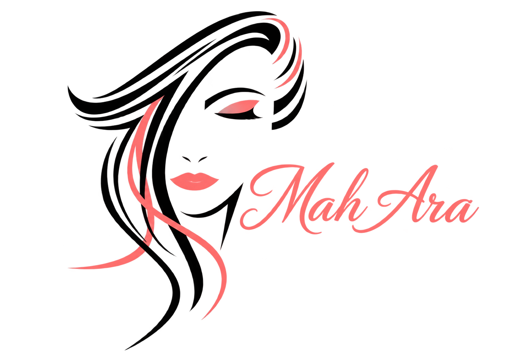
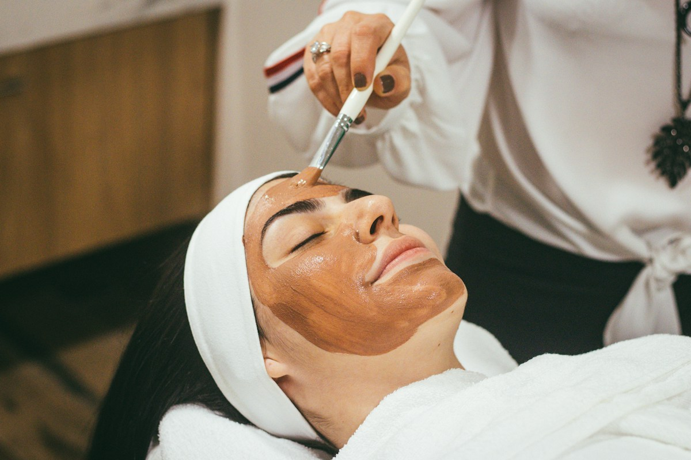
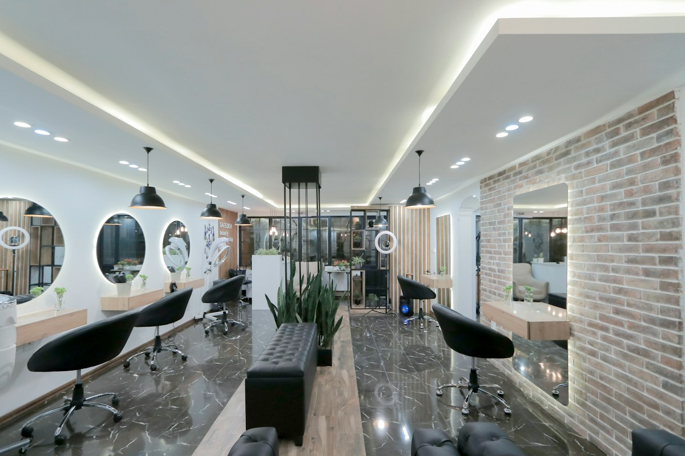

نورا
رنگ، بالیاژ و کوتاهی
سبکهای طبیعی و کمدردسر
وقتِ شما ↖پیش از اولین لمس قلممو، ظاهر دلخواهتان را پیدا کنید.
تجربهای شخصی از انتخاب تا آینهٔ آخر.
از یک حس شروع کنید.
جزئیاتش را در آینهٔ خودتان بسازید.
تصاویر این مجموعه الهامبخشاند و نمونهکار مشتریان سالن نیستند.
رنگها را امتحان کنید. شدت را تغییر دهید.
ظاهر محبوبتان را با خود به سالن بیاورید.
یک عکس روشن و روبهرو انتخاب کنید
یا یکی از مدلها را امتحان کنید
♧ پردازش عکس روی دستگاه شماست؛ تصویر برای ما ارسال نمیشود.
رنگ مو روی عکس پیشنمایش میشود. مدل کوتاهی انتخابی به کارت مشاوره اضافه میشود؛ تغییر مدل مو روی عکس هنوز متصل نیست.
رنگ ابرو تقریبی است. نتیجهٔ اصلاح و حذف مو روی تصویر شبیهسازی نمیشود.
رز کلاسیک · موجدار بلند · مرتبسازی ابرو
خدمات را کنار هم انتخاب کنید؛
زمان و هزینه را یکجا ببینید.
قیمتها و مدتها برای معرفی قابلیت سایت نمونهاند؛ مبلغ نهایی پس از مشاوره تعیین میشود.
سلیقه، زمان، بودجه و تجربههای قبلی شما،
نقطهٔ شروع یک انتخاب شخصی است.


از انتخاب یک رنگ تا آخرین جزئیات،
فرصتی برای ساختن حس خوب شما.
متخصص مناسب سبک خود را پیدا کنید.
رنگ، بالیاژ و کوتاهی
سبکهای طبیعی و کمدردسرمیکاپ و آرایش عروس
درخشش ملایم و آرایش ظریفطراحی ابرو و اصلاح
فرم طبیعی، جزئیات دقیقمعرفی اعضای تیم نمونه است و با اطلاعات واقعی سالن جایگزین میشود.
هنوز برای سالن ارسال نشده و نوبت قطعی نیست.
پیشنمایش برای انتخاب رنگ و حس کلی است. نور عکس، رنگ فعلی مو، جنس مو و محصولات روی نتیجهٔ واقعی اثر میگذارند. کوتاهی و حذف موی صورت در این نسخه شبیهسازی نمیشوند.
عکس در حافظهٔ همین صفحه پردازش میشود و در پرونده ذخیره نمیشود. با حذف عکس یا بستن صفحه، از این پیشنمایش کنار میرود. فقط اگر دکمهٔ ذخیرهٔ تصویر را بزنید، فایل روی دستگاهتان دانلود میشود.
بله، خدمات را از منو انتخاب کنید تا مجموع زمان و قیمت را ببینید. هماهنگی چند متخصص و موجودی واقعی تقویم پس از اتصال سامانهٔ سالن انجام میشود.
این نسخه برای نمایش تجربه است؛ درخواست و فهرست انتظار فقط روی همین دستگاه ذخیره میشوند. اتصال شمارهٔ سالن، سرور رزرو، پرداخت و ارسال پیام هنوز انجام نشده است.